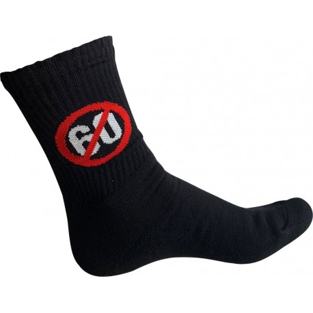
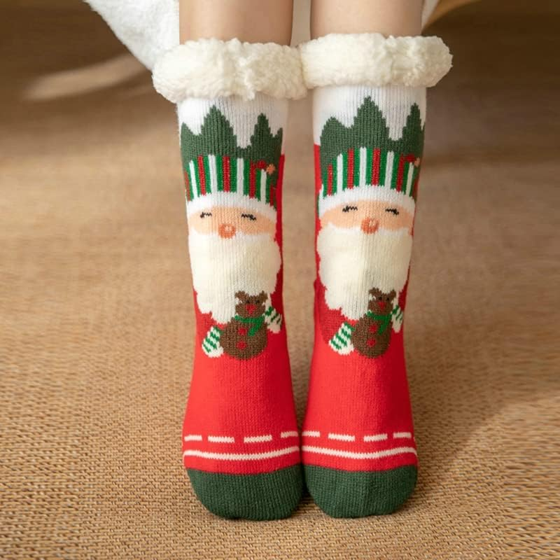
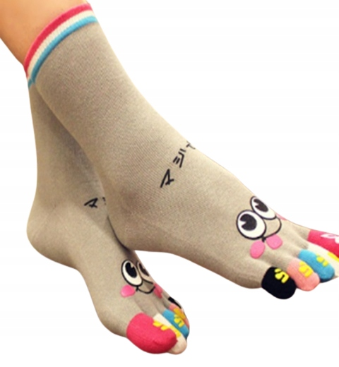
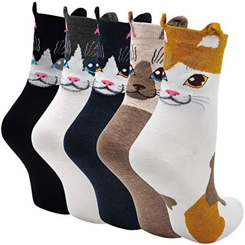
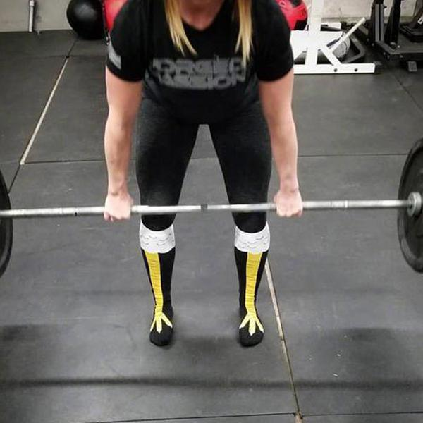

Witamy w dzisiejszym przedstawieniu rankingu najlepszych skarpet.

NUMER 5
skarpety zwykłe czarne

NUMER 4
skarpety świąteczne szersze niz wyższe

NUMER 3
skarpety z paluszkami

NUMER 2
skarpety kotki w ciąży

NUMER 1
skarpety kurze łapki
